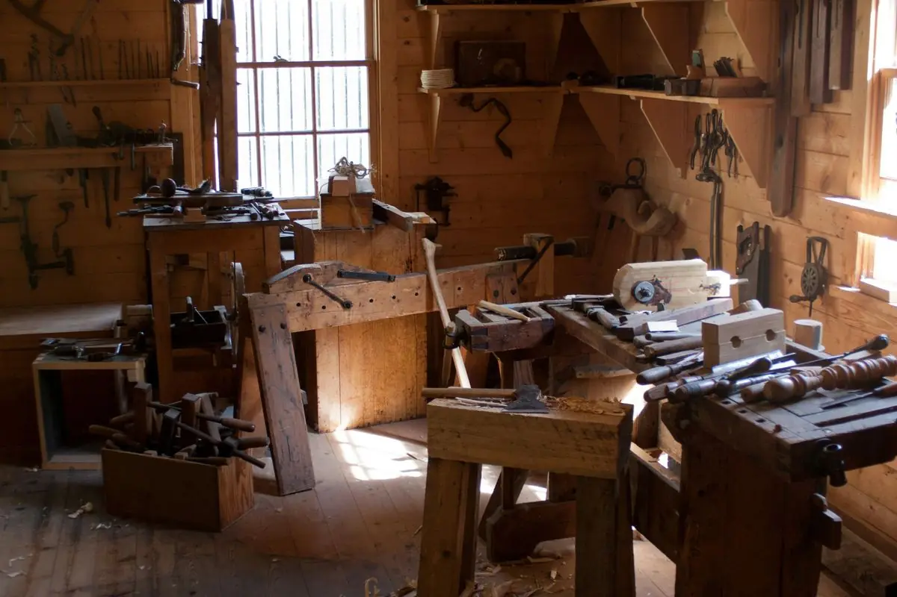
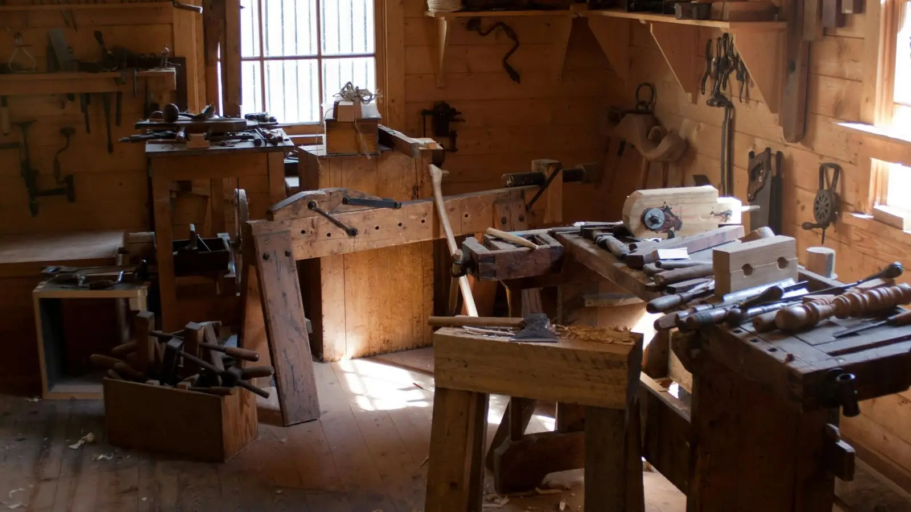
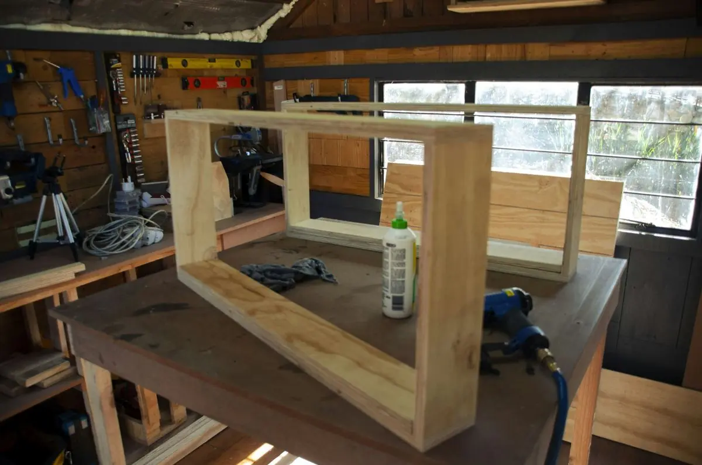
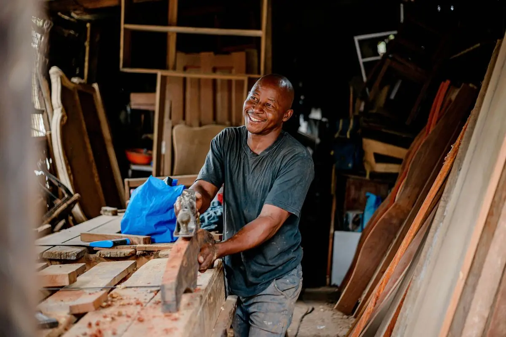
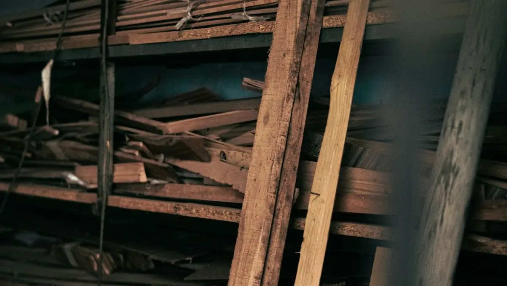
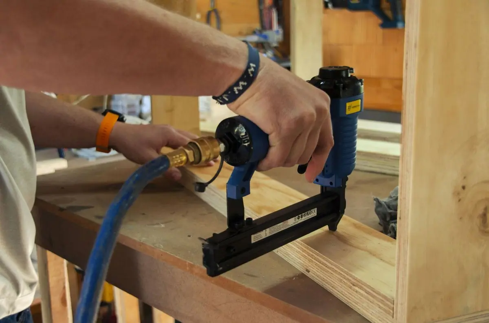

Fenêtres et baies
Bois, alu ou PVC, double ou triple vitrage, posés en rénovation sans gros travaux.

Menuiserie et agencement en bois massif. Faites défiler : on vous fait visiter l'atelier, de la planche à la pose.
Chaque planche est triée à la main : le fil, les nœuds, le séchage. Un bel ouvrage commence ici.
Les cadres sont montés, collés et mis d'équerre sur l'établi avant de partir chez vous.
Celui qui prend vos mesures est celui qui fabrique et qui pose. Pas d'intermédiaire.
À la pose, on contrôle chaque jeu et chaque fixation avec vous, et on laisse le chantier propre.

Un ouvrage bien fait se voit dans les détails. Touchez les points sur la photo pour voir comment on travaille.
0 détail découvert sur 4
Tout est fait sur mesure, dans le bois que vous choisissez avec nous.

Bois, alu ou PVC, double ou triple vitrage, posés en rénovation sans gros travaux.

Isolantes et sécurisées, dessinées pour le caractère de votre maison.

Battants, roulants ou motorisés, pilotables depuis votre téléphone.

Escaliers, placards, dressings : ajustés au centimètre.
Votre projet n'est pas dans la liste ? Parlons-en quand même.
On vient voir votre projet et on vous conseille, gratuitement.
Vous recevez un devis clair, ligne par ligne, avec les délais.
On fabrique, on pose, on vérifie tout avec vous.
Visite et devis gratuits, sans engagement. Nous intervenons dans votre commune et alentour.